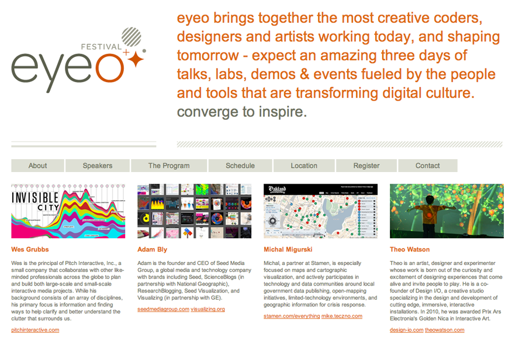

Martha Rettig
@artimated

Eyeo brings together the most creative coders, designers and artists working today, and shaping tomorrow – expect an amazing three days of talks, labs, demos & events fueled by the people and tools that are transforming digital culture.
Double-Taker (Snout), Interactive Robot from Golan Levin on Vimeo.
Robotagger: GML + ABB4400 from Golan Levin on Vimeo.
iQ font - When driving becomes writing / Full making of from wireless on Vimeo.
The Eyewriter from Evan Roth on Vimeo.
Portable Laser Tag System from s0nej on Vimeo.
Funky Forest system test from Theo Watson on Vimeo.